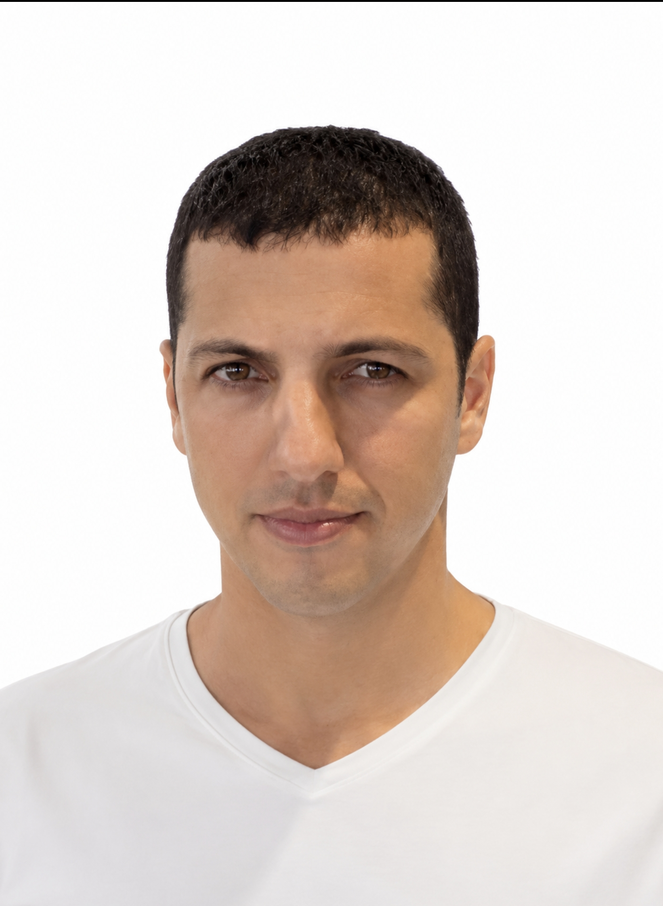

Alan Pablo
Estudante de medicina, engenheiro eletricista e bombeiro militar. Desenvolvo soluções que conectam conhecimento técnico, raciocínio fisiológico e experiência operacional em emergência.
Espaço de um acadêmico de medicina, engenheiro eletricista e bombeiro militar dedicado a conectar tecnologia de ponta ao salvamento de vidas.
Minha atuação fica na intersecção entre ciência médica, sistemas eletrônicos, automação, dados clínicos e resposta em cenários críticos.

Estudante de medicina, engenheiro eletricista e bombeiro militar. Desenvolvo soluções que conectam conhecimento técnico, raciocínio fisiológico e experiência operacional em emergência.
Meu objetivo é criar tecnologias que transformem dados brutos em informação útil: sinais vitais, sintomas, contexto alimentar, atividade física, medicação, evolução temporal e risco operacional.
Estudo da base biológica por trás dos sinais, sintomas, mecanismos de doença e decisões terapêuticas.
Modelagem de processos, sensores, sinais, lógica de decisão, software e integração entre plataformas.
Visão prática de atendimento, risco, priorização e comunicação em ambientes reais de urgência.
Projetos conceituais e práticos que combinam IA, automação, análise de sinais e fluxos de atendimento.
Fluxo no n8n para automatizar o registro seriado da pressão arterial, organizar contexto clínico e gerar alertas ou relatórios de acompanhamento.
Portal externo associado ao ecossistema de projetos, conteúdos e soluções digitais conectadas à educação, tecnologia e análise inteligente.
Ensaios e cadernos visuais autorais conectando medicina, engenharia, tecnologia e raciocínio científico.
Ensaio visual comparando descargas elétricas neuronais, falhas em sistemas eletrônicos e mecanismos de proteção contra panes em cadeia.
Ensaio tecnocientífico comparando o arco reflexo humano com sistemas de controle rápido em suspensão ativa veicular.
Textos sobre fisiologia, IA, emergência, tecnologia médica e como sistemas inteligentes podem apoiar o cuidado.
Uma reflexão sobre como a coleta seriada, o contexto do paciente e agentes inteligentes podem gerar relatórios mais úteis para profissionais de saúde.
Entre em contato para projetos, parcerias, pesquisa, protótipos, automações ou produção de conteúdo científico.